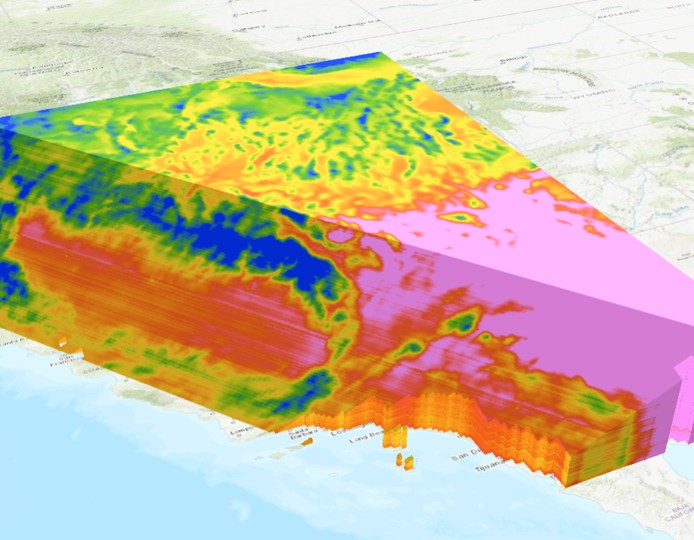
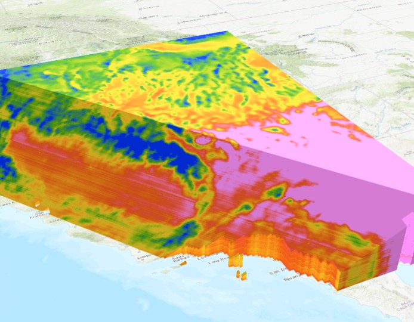

Working with Cal-Adapt Climate Data in R:
Rasters

| Feature | Cal-Adapt website | Cal-Adapt FTP | caladapt-py | caladaptR |
| Download rasters | ||||
| Statewide | ✔ | ✔ | ✔ | ✔ |
| User area-of-interest | ✔ | ✔ | ✔ | |
| 10 recommended GCMs | ✔ | ✔ | ✔ | ✔ |
| All 32 GCMs | ✔ | ✔ |

https://ucanr-igis.github.io/caladapt-py/
 
